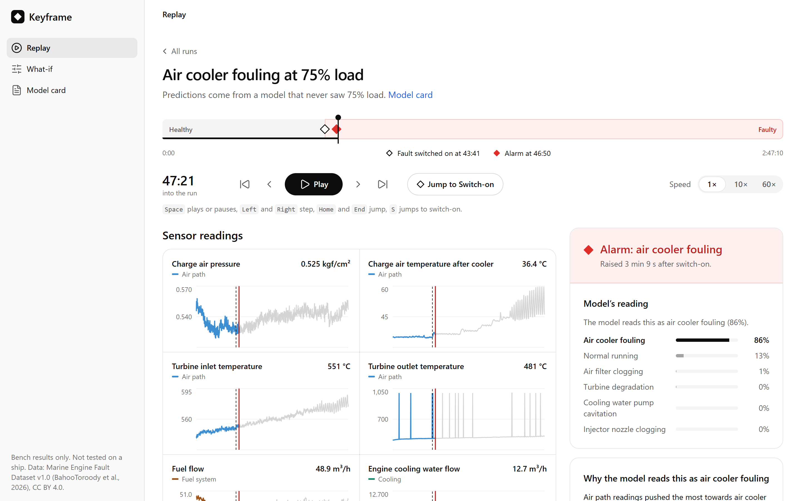
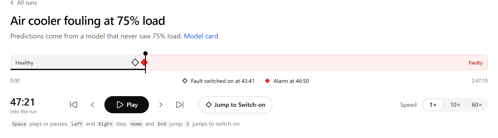
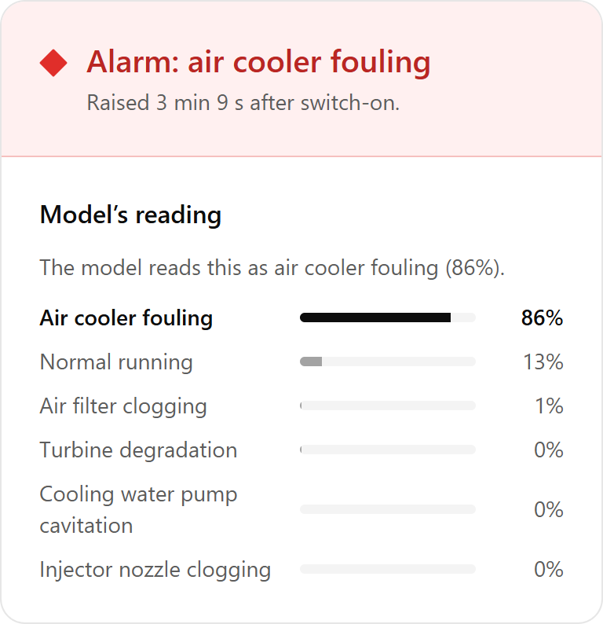
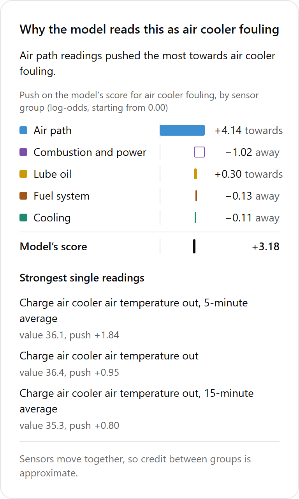
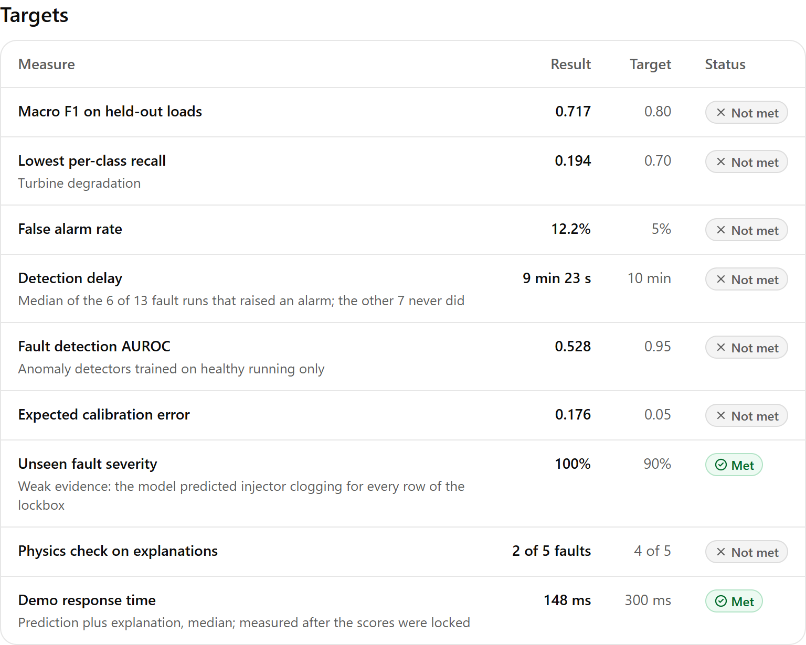

Catch engine faults early, and see why.
Keyframe reads a marine diesel's sensor logs, names the fault it sees developing, and shows the readings behind every alarm. Scored on real test-bench data, at engine loads it never trained on.
The demo replays real bench runs in your browser. No account needed.

0.717
Macro F1 across 6 engine states, scored only on loads held out from training
3 min 9 s
Fastest alarm after a fault switched on
148 ms
For a diagnosis and its explanation, median
From a drifting reading to a named fault
Keyframe watches the same channels your engine room logs: charge air, exhaust temperatures, cooling water, fuel and lube oil. When a fault starts to build, it tells you which one and why.
-

Catch the moment it changes
An alarm needs the same fault to hold across consecutive windows, so a single noisy reading doesn't send anyone to the engine room.
-

Name the likely fault
Five fault types, from air cooler fouling to turbine degradation, each with the model's confidence.
-

Show the readings behind it
Every alarm breaks down by sensor group and by reading, in engine terms an engineer can check.
-

Know exactly where it falls short
Targets were set before any model saw the data, and the model card reports every one, met or not.
What the bench data shows
Keyframe was built and scored on the Marine Engine Fault Dataset: a three-cylinder Matsui marine diesel run at 40 to 85% load with five faults switched on partway through. Here is what works, and what doesn't yet.
Works today
- Reads two faults the way an engineer would Air cooler fouling from charge air temperature after the cooler, and injector clogging from the exhaust temperature spread between cylinders.
- Holds up at loads it hasn't seen Macro F1 of 0.717 on held-out engine loads, up from 0.44 for the first baseline. Never scored on a random split.
- Physics features earn their place Adding physics-derived quantities and rolling windows lifts macro F1 from 0.39 to 0.62 on the same model family.
Not there yet
- Not tested on a ship All results come from one small engine on a test bench at steady loads.
- Misses too many faults, and alarms too often 6 of 13 fault runs raised a sustained alarm. The false alarm rate is 12.2% against a 5% target.
- Turbine degradation is the weakest class Recall of 0.19, and two other faults are partly recognised by the day of testing rather than the fault.
Find out what it makes of your engines
The only way to know if Keyframe works on your fleet is to run it on your data.
-
Share your logs
Sensor logs from one engine type, plus the faults your team has already recorded on it.
-
Agree the checklist
Your engineers sign off what each fault should do to the sensors before any model is trained on your data.
-
Get an honest scorecard
Replays of your own runs, and a report of what Keyframe catches, what it misses, and why.
Pilots suit engine makers and fleet operators with logged sensor data and an engineering team to judge the results.
Questions engineers ask
Has Keyframe been tested on a ship?
No. Every result so far comes from a test bench, and Keyframe must not be used for operating or maintenance decisions yet. A pilot is how it moves from bench data to your engines.
What data do you need from us?
Time-stamped sensor logs: pressures, temperatures, flows, speed and load, as most monitoring systems already record them. The bench model uses about 70 channels at one reading every 1 to 2 seconds. Records of known faults make the scorecard far more useful.
Will it work on our engines?
Not out of the box. The current model learned one three-cylinder test engine, so another engine needs its own data. The method carries over: the same features, the same honest scoring, the same explanations.
How do you keep the scores honest?
Every score comes from an engine load the model never trained on. Targets and the fault checklist were written down before any model saw the data, and one harder fault run was kept back and scored once, at the very end.
Does it replace our monitoring and alarm system?
No. Keyframe sits alongside it. Your existing alarms keep doing their job; Keyframe adds a likely cause and the readings behind it.
Can we check the work ourselves?
Yes. The code, notebooks, paper and model card are public, and one script rebuilds every result from the published dataset.
What does a pilot cost?
It depends on how much data you have and how many engine types you want covered. Request a pilot and we'll agree scope and cost on a first call.